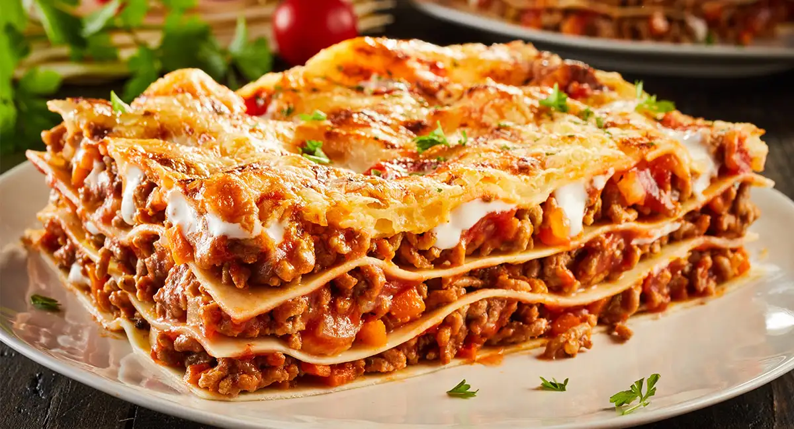

Lasagna

Lasagne are a type of pasta, possibly one of the oldest types, made of very wide, flat sheets. Either term can also refer to an Italian dish made of stacked layers of lasagne alternating with fillings such as ragù (ground meats and tomato sauce), vegetables, cheeses (which may include ricotta, mozzarella, and parmesan), and seasonings and spices, like Italian seasoning, such as garlic, oregano and basil. The dish may be topped with grated cheese, which becomes melted after baking. Typically cooked pasta is assembled with the other ingredients and then baked in an oven. The resulting baked pasta is cut into single-serving square portions.
Lasagne al forno, layered with a thicker ragù and béchamel sauce and corresponding to the most common version of the dish outside Italy, is traditionally associated with the Emilia-Romagna region of Italy. Here, and especially in its capital, Bologna, layers of lasagne are traditionally green (the color is obtained by mixing spinach or other vegetables into the dough) and served with ragù (a thick sauce made from onions, carrots, celery, finely ground pork and beef, butter, and tomatoes), bechamel and Parmigiano-Reggiano cheese.
In other regions lasagne can be made with various combinations of ricotta or mozzarella cheese, tomato sauce, meats (such as ground beef, pork or chicken), and vegetables (such as spinach, zucchini, olives, mushrooms), and the dish is typically flavoured with wine, garlic, onion, and oregano. In all cases, the lasagne are baked (al forno).
Traditionally pasta dough prepared in Southern Italy used semolina and water; in the northern regions, where semolina was not available, flour and eggs were used. In modern Italy, since the only type of wheat allowed for commercially sold pasta is durum wheat, industrial lasagne are made of semolina from durum wheat. Nonetheless, in the north and especially in Emilia-Romagna, the tradition of egg-based dough remains popular for artisanal and home-made productions.
Ingredients
- 1 (16 ounce) package lasagna noodles
- 1 pound lean ground beef
- salt and pepper to taste
- 1 (16 ounce) jar spaghetti sauce
- 1 clove garlic, minced
- 1 pound shredded mozzarella cheese
- 1 pound shredded Cheddar cheese
- 1 pint ricotta cheese
Steps
- Bring a large pot of lightly salted water to a boil. Add pasta and cook for 8 to 10 minutes or until al dente; drain.
- Preheat oven to 350 degrees F (175 degrees C). In a large skillet over medium-high heat, brown beef and season with salt and pepper; drain. Stir in spaghetti sauce and garlic and simmer 5 minutes.
- In a medium bowl, combine mozzarella, Cheddar and ricotta; stir well. In 9x13 inch pan, alternate layers of noodles, meat mixture and cheese mixture until pan is filled.
- Bake in preheated oven for 30 minutes, or until cheese is melted and bubbly.